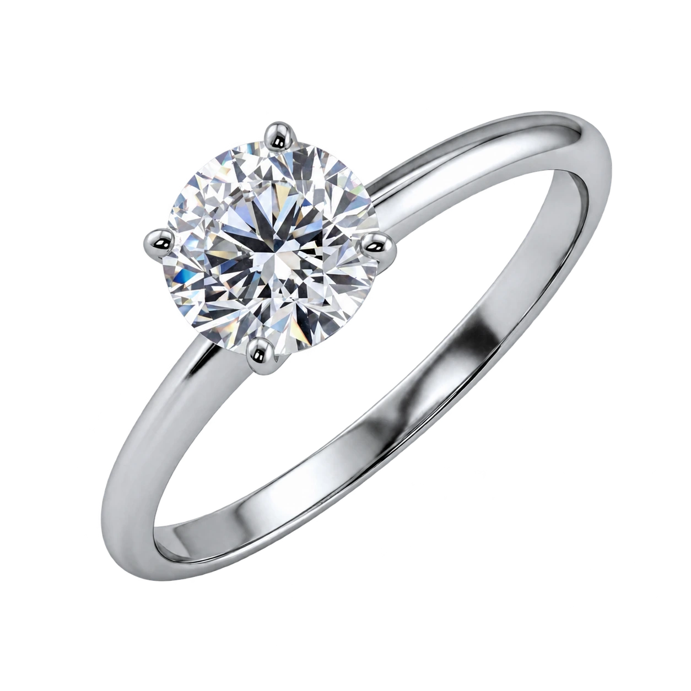

Эксклюзив
Свобода замысла и сложность исполнения. Украшения с выразительными камнями, в которых раскрывается авторский почерк петербургских мастеров.
Смотреть украшения
Петербургское ювелирное искусство с 1996 года.
История завода
С 1996 года мы создаём украшения в Петербурге, объединяя все этапы работы внутри одного завода.
Эскиз, литьё, обработка, закрепка камней и финальный контроль качества — за каждым этапом стоит наша команда. Полный цикл позволяет отвечать за украшение целиком: от пропорций оправы до надёжности каждой закрепки.
Многие мастера работают на заводе с первых лет его истории. Их опыт передаётся внутри команды и сохраняется в каждом изделии — в точности исполнения, удобстве посадки и внимании к деталям.

Колье «Грёзы», созданное художником-ювелиром Верой Черновой на базе завода КАСТ, вошло в собрание Государственного Эрмитажа.
42 резных агата и 782 бриллианта соединены в композицию, в которой художественный замысел неотделим от точности исполнения.
Публикация ЭрмитажаКАСТ дважды подряд становился обладателем Гран-при конкурса «Лучшие украшения России». Для нас профессиональное признание продолжает ежедневную работу мастеров.
Свобода замысла и сложность исполнения. Украшения с выразительными камнями, в которых раскрывается авторский почерк петербургских мастеров.
Смотреть украшенияЧистота линий и выверенные пропорции оправы раскрывают сияние бриллианта. Каждая деталь подчинена красоте камня.
Смотреть украшения


Знакомые формы в точном исполнении. Лаконичные украшения из золота с бриллиантами естественно становятся частью вашего дня.
Смотреть украшения
Жёлтые бриллианты раскрывают богатство своих оттенков в оправах из белого золота.
Открыть коллекцию
Помолвка и свадьба
От лаконичных гладких колец до бриллиантовых дорожек разной каратности — найдите свою пару, в которой сочетаются ваш стиль и комфорт.
Свет в каждом движении
Украшение, которое уместно везде: от утренней встречи до вечернего выхода.


Встретимся в Петербурге

Рассмотрите камни, почувствуйте вес золота и примерьте украшение, которое привлекло ваше внимание. Приглашаем в шоурум завода.
Санкт-Петербург